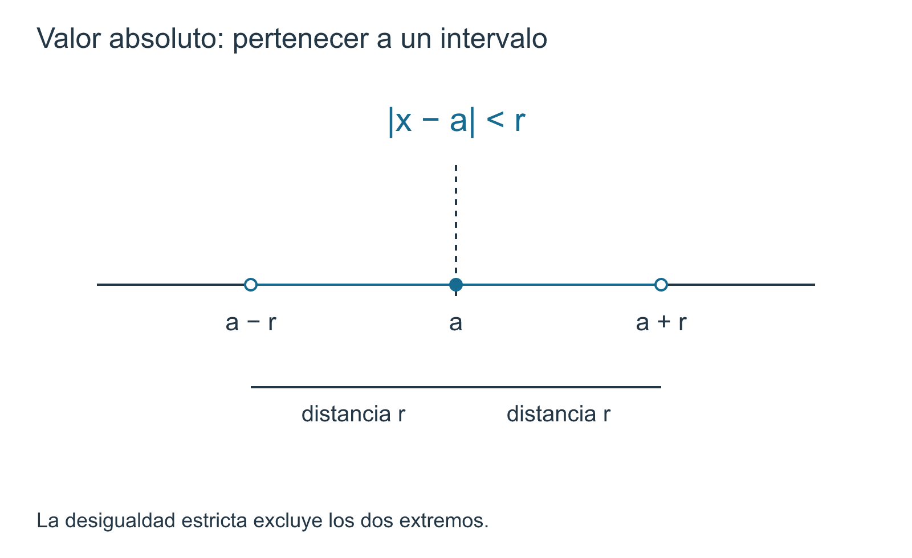

1.2 — Valor absoluto, distancia y desigualdades
1 Los números reales: axiomas de cuerpo, orden y completitud
← Anterior · Índice del capítulo · Siguiente →
1.2 Valor absoluto, distancia y desigualdades
Del orden a la distancia
En §1.1 aprendimos a comparar números: sabemos qué significa que uno esté a la izquierda de otro y qué operaciones preservan o invierten una desigualdad. Pero el cálculo necesitará algo más fino que decidir cuál de dos números es mayor.
Necesitaremos responder preguntas como estas:
- ¿qué tan lejos está \(x\) de \(0\)?;
- ¿qué tan lejos está \(x\) de un número fijo \(a\)?;
- ¿qué significa que \(x\) esté «muy cerca» de \(a\)?;
- ¿cómo podemos convertir una afirmación geométrica de cercanía en desigualdades manipulables algebraicamente?
La herramienta elemental que responde todas estas preguntas es el valor absoluto.
Definición 1.1 Valor absoluto. Para \(x\in\mathbb R\), definimos
\[ |x|= \begin{cases} x, & x\ge0,\\ -x, & x<0. \end{cases} \]
La definición está bien determinada porque, por tricotomía, todo real satisface exactamente una de las condiciones \(x\ge0\) o \(x<0\). En particular, \(x=0\) pertenece únicamente a la primera rama.
El número \(|x|\) representa la distancia de \(x\) al origen sobre la recta real.
La definición por casos puede parecer puramente algebraica, pero su significado es geométrico. Por ejemplo,
\[ |5|=5, \qquad |-5|=5, \]
porque los puntos \(5\) y \(-5\) se encuentran a la misma distancia del origen.
Esta observación explica por qué el valor absoluto nunca es negativo: una distancia no puede serlo. Pero, como siempre, la intuición geométrica debe poder traducirse a las reglas del cuerpo ordenado.
Propiedades básicas que no conviene memorizar aisladas
Proposición 1.1 Para cualesquiera \(x,y\in\mathbb R\) se cumplen las siguientes propiedades:
- \(|x|\ge0\), y \(|x|=0\) si y solo si \(x=0\);
- \(|-x|=|x|\);
- \(-|x|\le x\le|x|\);
- \(|xy|=|x|\,|y|\);
- si \(a\ge0\), entonces \[ |x|\le a \iff -a\le x\le a; \]
- si \(a>0\), entonces \[ |x|<a \iff -a<x<a. \]
Demostración. Las tres primeras afirmaciones se obtienen directamente de la definición por casos. Si \(x\ge0\), entonces \(|x|=x\); si \(x<0\), entonces \(|x|=-x>0\). De aquí se sigue \(|x|\ge0\), y la igualdad ocurre exactamente cuando \(x=0\). Aplicando la misma definición a \(-x\) se obtiene \(|-x|=|x|\), y en ambos casos
\[ -|x|\le x\le|x|. \]
Para la propiedad del producto controlamos los signos. Si \(x,y\ge0\), entonces
\[ |xy|=xy=|x|\,|y|. \]
Si \(x,y<0\), entonces \(xy>0\) y
\[ |xy|=xy=(-x)(-y)=|x|\,|y|. \]
Si uno es no negativo y el otro negativo, entonces \(xy\le0\) y aparece exactamente una negación. Por ejemplo, si \(x\ge0\) e \(y<0\),
\[ |xy|=-xy=x(-y)=|x|\,|y|. \]
El caso restante es simétrico. Por tanto,
\[ |xy|=|x|\,|y|. \]
Consideremos ahora \(a\ge0\). Supongamos primero
\[ |x|\le a. \]
Como ya sabemos que
\[ -|x|\le x\le|x|, \]
la desigualdad \(|x|\le a\) da inmediatamente
\[ x\le|x|\le a. \]
Al multiplicar \(|x|\le a\) por \(-1\), el orden se invierte:
\[ -a\le-|x|. \]
Junto con \(-|x|\le x\), obtenemos
\[ -a\le x. \]
Por tanto,
\[ -a\le x\le a. \]
Recíprocamente, supongamos
\[ -a\le x\le a. \]
Si \(x\ge0\), entonces \(|x|=x\le a\). Si \(x<0\), de \(-a\le x\) se sigue, al multiplicar por \(-1\), que \(-x\le a\); como \(|x|=-x\), también \(|x|\le a\). Así,
\[ |x|\le a \iff -a\le x\le a. \]
Para la versión estricta supongamos \(a>0\). Si
\[ |x|<a, \]
entonces
\[ x\le|x|<a, \]
de modo que \(x<a\). Además, al negar \(|x|<a\) obtenemos
\[ -a<-|x|, \]
y como \(-|x|\le x\),
\[ -a<x. \]
Luego
\[ -a<x<a. \]
Recíprocamente, si
\[ -a<x<a, \]
entonces, si \(x\ge0\), tenemos \(|x|=x<a\); y si \(x<0\), de \(-a<x\) se sigue \(-x<a\), por lo que \(|x|=-x<a\). En consecuencia,
\[ |x|<a \iff -a<x<a. \]
\(\blacksquare\)
La equivalencia
\[ |x|<a \iff -a<x<a \]
no es un truco de resolución de inequaciones. Dice literalmente:
estar a distancia menor que \(a\) del origen equivale a encontrarse entre \(-a\) y \(a\).
La desigualdad algebraica y la descripción geométrica son dos lenguajes para la misma región de la recta.
Distancia entre dos puntos
Si \(|x|\) mide la distancia de \(x\) al origen, para medir la distancia entre dos puntos \(x\) e \(y\) basta trasladar uno de ellos al origen. La diferencia
\[ x-y \]
indica cuánto debemos desplazarnos desde \(y\) para llegar a \(x\), y su valor absoluto elimina la orientación del desplazamiento.
Definimos entonces, en la recta real,
\[ d(x,y):=|x-y|. \]
Antes de utilizar esta notación como una verdadera noción de distancia, registremos las propiedades que ya podemos justificar a partir de Proposición 1.6. Para cualesquiera \(x,y\in\mathbb R\),
\[ d(x,y)\ge0. \]
Además,
\[ \begin{aligned} d(x,y)=0 &\iff |x-y|=0\\ &\iff x-y=0\\ &\iff x=y. \end{aligned} \]
Por último,
\[ d(x,y) = |x-y| = |-(y-x)| = |y-x| = d(y,x). \]
Tenemos así no negatividad, separación de puntos y simetría. Falta una propiedad más profunda: la distancia directa de \(x\) a \(z\) no debería superar la longitud de un recorrido que pasa por un punto intermedio \(y\). Esa propiedad será consecuencia de la desigualdad triangular para el valor absoluto.
La desigualdad triangular
Teorema 1.1 Desigualdad triangular. Para cualesquiera \(x,y\in\mathbb R\),
\[ |x+y|\le |x|+|y|. \]
Ya sabemos que cada número queda atrapado entre el negativo y el positivo de su valor absoluto:
\[ -|x|\le x\le|x|, \qquad -|y|\le y\le|y|. \]
La estrategia consiste en obtener por separado una cota inferior y una cota superior para \(x+y\), reunirlas en una doble desigualdad y aplicar después la caracterización de \(|\cdot|\) demostrada en Proposición 1.6.
Demostración. De
\[ -|x|\le x \qquad\text{y}\qquad -|y|\le y \]
se obtiene, al sumar,
\[ -(|x|+|y|)\le x+y. \]
Por otra parte, de
\[ x\le|x| \qquad\text{y}\qquad y\le|y| \]
se obtiene
\[ x+y\le|x|+|y|. \]
Reuniendo ambas cotas,
\[ -(|x|+|y|)\le x+y\le|x|+|y|. \]
Como \(|x|+|y|\ge0\), la caracterización no estricta de Proposición 1.6 da
\[ \boxed{|x+y|\le|x|+|y|}. \]
\(\blacksquare\)
La demostración tiene una arquitectura reutilizable:
- obtener cotas ordinarias para una expresión;
- reunirlas en una doble desigualdad simétrica;
- volver a empaquetarlas como una desigualdad de valor absoluto.
Este movimiento entre orden, valor absoluto y distancia reaparecerá constantemente en cálculo.
Aplicamos ahora el teorema a
\[ u=a-c, \qquad v=c-b. \]
Como \(u+v=a-b\),
\[ |a-b| \le |a-c|+|c-b|. \]
En términos de la función \(d\),
\[ \boxed{ d(a,b)\le d(a,c)+d(c,b). } \]
Por tanto, \(d(x,y)=|x-y|\) posee las cuatro propiedades fundamentales de una distancia sobre \(\mathbb R\): no negatividad, separación de puntos, simetría y desigualdad triangular. No necesitamos todavía desarrollar la teoría general de espacios métricos; bastará reutilizar estas propiedades cuando aparezca la noción de cercanía.
La desigualdad triangular inversa
La desigualdad triangular también permite controlar cuánto pueden cambiar las distancias al comparar dos puntos.
Corolario 1.1 Desigualdad triangular inversa. Para cualesquiera \(x,y\in\mathbb R\),
\[ \bigl||x|-|y|\bigr|\le|x-y|. \]
Demostración. Escribamos
\[ x=(x-y)+y. \]
Por la desigualdad triangular,
\[ |x| \le |x-y|+|y|, \]
y por tanto
\[ |x|-|y|\le|x-y|. \]
Intercambiando \(x\) e \(y\) obtenemos
\[ |y|-|x|\le|y-x|=|x-y|. \]
Para convertir esta segunda desigualdad en una cota inferior de \(|x|-|y|\), multiplicamos por \(-1\) e invertimos el orden:
\[ -|x-y|\le |x|-|y|. \]
Junto con la primera cota,
\[ -|x-y| \le |x|-|y| \le |x-y|. \]
Como \(|x-y|\ge0\), la caracterización no estricta de Proposición 1.6, aplicada a la cantidad \(|x|-|y|\), da
\[ \boxed{ \bigl||x|-|y|\bigr|\le|x-y|. } \]
\(\blacksquare\)
Como
\[ d(x,0)=|x|, \qquad d(y,0)=|y|, \]
la desigualdad triangular inversa puede escribirse como
\[ \bigl|d(x,0)-d(y,0)\bigr|\le d(x,y). \]
Más generalmente, fijado cualquier \(c\in\mathbb R\), la misma desigualdad aplicada a \(x-c\) e \(y-c\) produce
\[ \boxed{ \bigl|d(x,c)-d(y,c)\bigr|\le d(x,y). } \]
En efecto,
\[ (x-c)-(y-c)=x-y. \]
Así, cambiar el punto desde \(x\) hasta \(y\) no puede modificar su distancia a un mismo punto de referencia \(c\) en una cantidad mayor que la propia distancia entre \(x\) e \(y\).
Una desigualdad centrada en un punto
En cálculo rara vez nos interesará solamente la distancia al origen. Mucho más frecuente será medir la distancia respecto de un número fijo \(a\).
Si \(r>0\), la condición
\[ |x-a|<r \]
significa que la distancia de \(x\) a \(a\) es menor que \(r\). La caracterización de Proposición 1.6 permite traducirla directamente:
\[ \begin{aligned} |x-a|<r &\iff -r<x-a<r\\ &\iff a-r<x<a+r. \end{aligned} \]
Por tanto,
\[ \boxed{ |x-a|<r \iff x\in(a-r,a+r). } \]
La misma traducción con orden débil describe la banda cerrada alrededor de \(a\).
Proposición 1.2 Si \(a\in\mathbb R\) y \(r>0\), entonces
\[ |x-a|<r \iff a-r<x<a+r \iff x\in(a-r,a+r), \]
mientras que
\[ |x-a|\le r \iff a-r\le x\le a+r \iff x\in[a-r,a+r]. \]
Fuera de esas bandas se tiene
\[ |x-a|>r \iff x<a-r\ \text{o}\ x>a+r \iff x\in(-\infty,a-r)\cup(a+r,\infty), \]
y
\[ |x-a|\ge r \iff x\le a-r\ \text{o}\ x\ge a+r \iff x\in(-\infty,a-r]\cup[a+r,\infty). \]
Las dos formas exteriores merecen una justificación porque introducen una disyunción. Como el orden de \(\mathbb R\) es total,
\[ |x-a|>r \iff \neg\bigl(|x-a|\le r\bigr). \]
La equivalencia para la banda cerrada transforma esto en
\[ \neg\bigl(a-r\le x\le a+r\bigr). \]
Para que falle esa doble desigualdad debe fallar al menos una de sus dos condiciones. Por tricotomía,
\[ \neg(a-r\le x) \iff x<a-r, \]
y
\[ \neg(x\le a+r) \iff x>a+r. \]
Por tanto,
\[ \boxed{ |x-a|>r \iff x<a-r\ \text{o}\ x>a+r. } \]
De manera análoga,
\[ |x-a|\ge r \iff \neg\bigl(|x-a|<r\bigr) \iff \neg\bigl(a-r<x<a+r\bigr), \]
y la negación de la banda abierta da
\[ \boxed{ |x-a|\ge r \iff x\le a-r\ \text{o}\ x\ge a+r. } \]
La diferencia entre \(>\) y \(\ge\) aparece exactamente en los dos puntos frontera \(a-r\) y \(a+r\): pertenecen a la región exterior cerrada, pero no a la exterior estricta.
De
\[ |x-a|<r \]
no se sigue \(-r<x<r\) salvo que \(a=0\).
El intervalo está centrado en \(a\), no en el origen:
\[ (a-r,a+r). \]

Dos maneras de leer una misma inequación
Ejemplo 1.1 Resolvamos
\[ |2x-3|<5. \]
Podemos hacerlo algebraicamente o geométricamente.
Lectura algebraica. Por la equivalencia para el valor absoluto,
\[ -5<2x-3<5. \]
Sumando \(3\),
\[ -2<2x<8, \]
y dividiendo por el número positivo \(2\),
\[ -1<x<4. \]
Por tanto,
\[ x\in(-1,4). \]
Lectura geométrica. Como
\[ 2x-3 = 2\left(x-\frac32\right), \]
la multiplicatividad del valor absoluto da
\[ |2x-3| = 2\left|x-\frac32\right|. \]
Puesto que \(2>0\),
\[ |2x-3|<5 \iff \left|x-\frac32\right|<\frac52. \]
Así, \(x\) debe encontrarse a distancia menor que \(5/2\) del centro \(3/2\). El intervalo correspondiente es
\[ \left(\frac32-\frac52,\frac32+\frac52\right) =(-1,4). \]
Las dos lecturas caracterizan la misma región mediante equivalencias reversibles: una en lenguaje de orden y la otra en lenguaje de distancia.
Estimar no significa calcular exactamente
El valor absoluto será también nuestra herramienta básica para estimar cantidades.
Supongamos que conocemos una aproximación de \(x\) a un punto \(a\), con \(r>0\), en el sentido de que
\[ |x-a|<r. \]
Quizá no sepamos el valor exacto de \(x\), pero podemos controlar su tamaño. Como
\[ x=(x-a)+a, \]
la desigualdad triangular y la hipótesis dan
\[ |x| \le |x-a|+|a| < r+|a|. \]
Así obtenemos
\[ \boxed{ |x-a|<r \quad\Longrightarrow\quad |x|<|a|+r. } \]
Podemos decir algo más preciso utilizando la desigualdad triangular inversa:
\[ \bigl||x|-|a|\bigr| \le |x-a| < r. \]
Por la caracterización estricta del valor absoluto,
\[ -r<|x|-|a|<r, \]
y por tanto
\[ \boxed{ |a|-r<|x|<|a|+r. } \]
La cota superior recupera la estimación anterior; la inferior muestra que, si \(x\) está a distancia menor que \(r\) de \(a\), su magnitud tampoco puede disminuir respecto de \(|a|\) en una cantidad igual o mayor que \(r\).
Este pequeño patrón es una de las técnicas fundamentales del cálculo:
\[ \boxed{ \text{cantidad desconocida} = \text{error respecto de una referencia} + \text{referencia conocida}. } \]
Después aplicamos desigualdades de valor absoluto para transformar esa descomposición en cotas.
No estamos hablando todavía de límites. Pero cuando más adelante aparezcan expresiones como
\[ |x-a|<\delta \]
o
\[ |u_n-L|<\varepsilon, \]
su significado geométrico ya no deberá aprenderse de nuevo: serán afirmaciones acerca de distancias.
Antes de seguir
1. Si
\[ |x-a|<r, \qquad |y-b|<s, \]
con \(r,s>0\), demuestra que
\[ |(x+y)-(a+b)|<r+s. \]
Respuesta. Como
\[ (x+y)-(a+b)=(x-a)+(y-b), \]
la desigualdad triangular da
\[ |(x+y)-(a+b)| \le |x-a|+|y-b| <r+s. \]
2. Resuelve
\[ |x-1|+|x+1|\le4. \]
Respuesta. Los puntos \(-1\) y \(1\) son los lugares donde cambian los signos de los argumentos de los valores absolutos, así que separamos tres regiones.
Si \(x\le-1\), entonces
\[ |x-1|+|x+1| =(1-x)+(-x-1) =-2x. \]
La condición \(-2x\le4\) equivale a \(x\ge-2\), de modo que esta rama aporta
\[ [-2,-1]. \]
Si \(-1\le x\le1\), entonces
\[ |x-1|+|x+1| =(1-x)+(x+1) =2, \]
por lo que todos los puntos de esta región satisfacen la inequación. Esta rama aporta
\[ [-1,1]. \]
Si \(x\ge1\), entonces
\[ |x-1|+|x+1| =(x-1)+(x+1) =2x. \]
La condición \(2x\le4\) equivale a \(x\le2\), así que esta rama aporta
\[ [1,2]. \]
Las tres regiones cubren toda la recta real y sus soluciones se reúnen mediante una unión:
\[ [-2,-1]\cup[-1,1]\cup[1,2]=[-2,2]. \]
Por tanto,
\[ \boxed{x\in[-2,2]}. \]
Qué hemos ganado
El valor absoluto comenzó como una definición por casos y terminó organizando tres lenguajes que utilizaremos constantemente:
\[ \boxed{ \text{orden} \longleftrightarrow \text{valor absoluto} \longleftrightarrow \text{distancia}. } \]
Si \(r>0\), la definición de distancia y Proposición 1.7 condensan la traducción fundamental en una sola cadena:
\[ \boxed{ |x-a|<r \iff d(x,a)<r \iff a-r<x<a+r \iff x\in(a-r,a+r). } \]
Así, una misma afirmación puede leerse como desigualdad de valor absoluto, condición de distancia, doble desigualdad o pertenencia a un intervalo abierto.
También disponemos de las dos estimaciones fundamentales
\[ |x+y|\le|x|+|y| \]
y
\[ \bigl||x|-|y|\bigr|\le|x-y|. \]
La desigualdad triangular controla cómo se acumulan tamaños o errores; la desigualdad triangular inversa controla cuánto puede cambiar una magnitud —o una distancia a un punto fijo— cuando cambia el punto.
Estas herramientas permiten hablar con precisión de tamaño y cercanía. Pero todavía no permiten hablar de «puntos frontera» de conjuntos que quizá no contengan sus extremos.
Ese será el problema de §1.3. Allí distinguiremos por primera vez entre máximo y supremo, y prepararemos el lenguaje con el que examinaremos, en §1.4, la frontera que sugiere la ecuación \(x^2=2\).